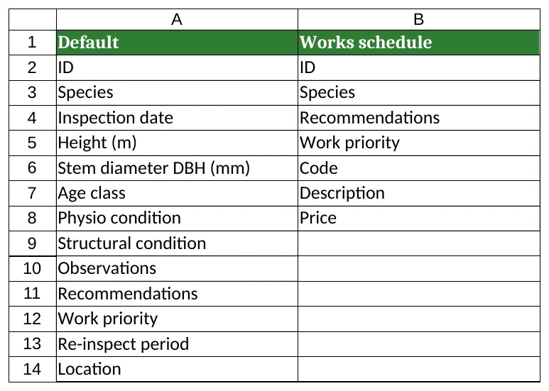
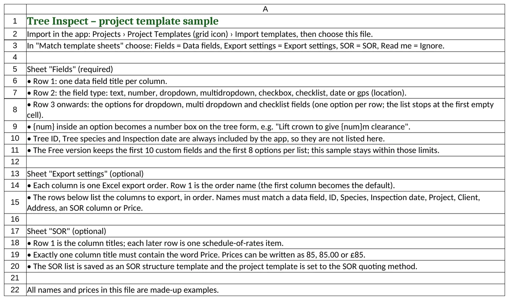
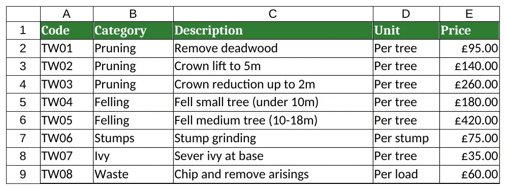
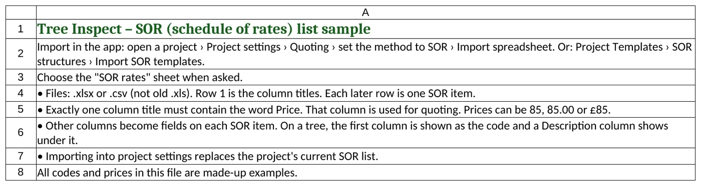
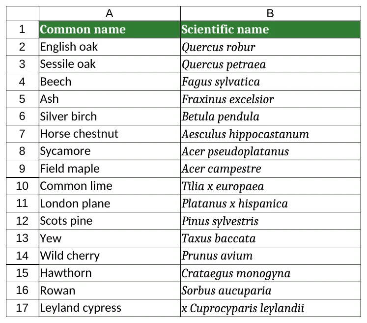
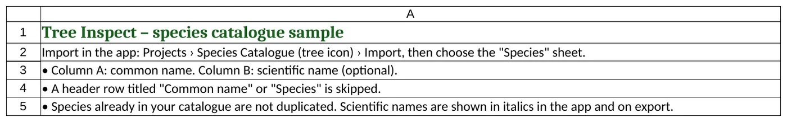
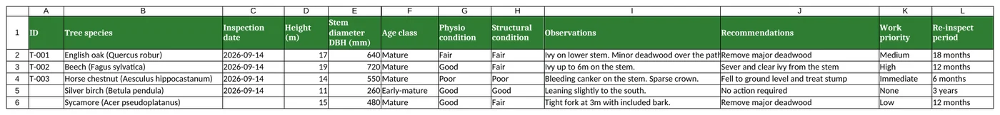
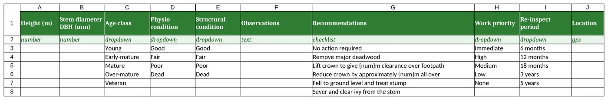
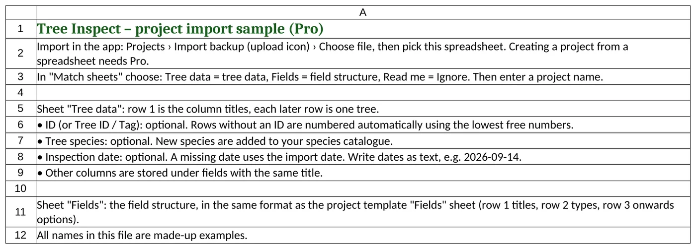

Sample templates
Excel files you can download, edit and import into Tree Inspect. Each one shows what the sheets look like and what every column means.
1. Project template
⬇ Download project template sample
A survey form with 10 fields (within the Free limit), two Excel export orders and an 8-item SOR list. Import: Projects › Project templates › Import templates › Choose file. In Match template sheets choose Fields = Data fields, Export settings = Export settings, SOR = SOR and Read me = Ignore. The template is named after the file. See Templates and fields.
Sheet “Fields” (required)

| Part | What goes there |
|---|---|
| Row 1 – title | The field name shown on the tree form and used as the Excel column title, e.g. Height (m). One field per column. |
| Row 2 – type | text, number, dropdown, multidropdown, checkbox, checklist, date or gps (location). Capitals and spaces are ignored. |
| Row 3 onwards – options | For dropdown, multi dropdown and checklist fields: one option per row. The list ends at the first empty cell. Leave blank for other types. |
{{num}} in an option | Becomes a number box on the tree form, e.g. Reduce crown by approximately {{num}}m all over. |
The sample’s columns:
| Column | Type | Meaning / options |
|---|---|---|
| Height (m) | number | Tree height in metres. |
| Stem diameter DBH (mm) | number | Stem diameter at breast height in millimetres. |
| Age class | dropdown | Young, Early-mature, Mature, Over-mature, Veteran. |
| Physio condition | dropdown | Physiological condition: Good, Fair, Poor, Dead. |
| Structural condition | dropdown | Structural condition: Good, Fair, Poor, Dead. |
| Observations | text | Free-text notes. |
| Recommendations | checklist | Tick any: No action required; Remove major deadwood; Lift crown to give {{num}}m clearance over footpath; Reduce crown by approximately {{num}}m all over; Fell to ground level and treat stump; Sever and clear ivy from the stem. |
| Work priority | dropdown | Immediate, High, Medium, Low, None. |
| Re-inspect period | dropdown | 6 months, 12 months, 18 months, 3 years, 5 years. |
| Location | gps | Latitude and longitude, with a Use current GPS button. |
Tree ID, tree species and inspection date are always added by the app, so they are not listed in this sheet.
Sheet “Export settings” (optional)

| Part | Meaning |
|---|---|
| Row 1 | The name of the export order. The first column becomes the default. |
| Rows below | The columns to export, top to bottom in order. Use a field title from the Fields sheet, or ID, Species, Inspection date, Project, Project ID, Client, Address, an SOR column title or Price. Names the app does not recognise are skipped. |
| Default (sample) | A full survey: ID, species, date and every field. |
| Works schedule (sample) | ID, Species, Recommendations, Work priority, and the SOR Code, Description and Price. |
Sheet “SOR” (optional) PRO

Same columns as the SOR list sample. It is saved as an SOR structure named after the sheet, and the template’s quoting method is set to SOR. Quoting needs Pro.
Sheet “Read me”

2. SOR (schedule of rates) list PRO
Eight sample work items with prices. Import: open a project › Project settings › set the quoting method to SOR › Import spreadsheet, then choose the SOR rates sheet if asked. Importing replaces the project’s current SOR list. See Project settings and SOR.

| Column | What it means |
|---|---|
| Code | A short item code, e.g. TW01. The first column is shown as the code on the tree form. |
| Category | A group for the item, e.g. Pruning, Felling, Stumps. |
| Description | The work, e.g. Crown lift to 5m. Shown under the code on the tree form. |
| Unit | How the item is counted, e.g. Per tree, Per stump, Per load. |
| Price | The unit price used for quoting. Exactly one column title must contain the word “Price”. 85, 85.00 and £85 all work. |
You can rename, add or remove the other columns; each becomes a field on every SOR item. Files must be .xlsx or .csv.

3. Species catalogue
⬇ Download species catalogue sample
Sixteen common UK species. Import: Projects › Species catalogue › Import from Excel, then choose the Species sheet. Species already in your catalogue are not added twice. Many of these are in the built-in list already, so use the file as a pattern for your own species. See Species catalogue.

| Column | What it means |
|---|---|
| A – Common name | The everyday name, e.g. English oak. One species per row. A header row is skipped. |
| B – Scientific name | The botanical name, e.g. Quercus robur. Optional. Shown in italics in the app and in exports. |

4. Project import PRO
⬇ Download project import sample
Creates a whole project with five trees. Creating a project from a spreadsheet needs Pro. Import: Projects › Import backup › Choose file. In Match sheets choose Tree data = Tree data, Fields = Field structure, Read me = Ignore, then enter a project name. See Import, export and backups.
Sheet “Tree data”

| Column | What it means |
|---|---|
| ID | The tree ID, e.g. T-001. Also recognised as Tree ID or Tag. Optional: blank IDs are numbered automatically. |
| Tree species | The species, e.g. English oak (Quercus robur). Also recognised as Species. |
| Inspection date | Also recognised as Date. Optional: a blank date uses the import date. Write dates as text, e.g. 2026-09-14. |
| Height (m) … Re-inspect period | Every other column is stored under the field with the same title in the Fields sheet. Dropdown values should match an option; checklist values use the option text. |
Sheet “Fields”

Same format as the project template Fields sheet: row 1 titles, row 2 types, options below.
